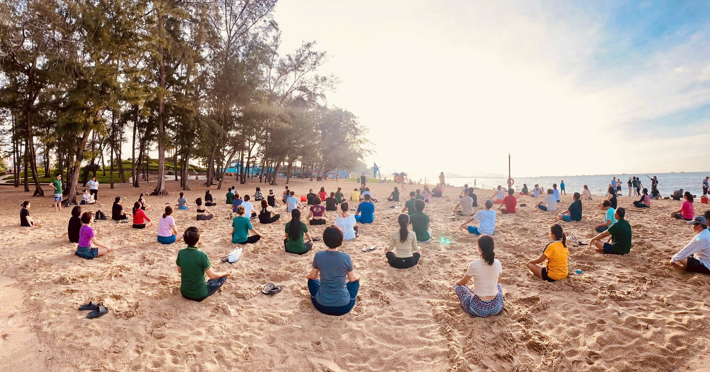

1
Bạn muốn có thêm lựa chọn
Công việc hiện tại vẫn ổn, nhưng bạn không muốn toàn bộ sự an toàn tài chính chỉ phụ thuộc vào một nguồn thu.
Từ một người làm IT luôn muốn test kỹ trước khi tin, mình bắt đầu tìm hiểu cách xây dựng nguồn thu nhập thứ hai — chậm rãi, tỉnh táo và không tô hồng.
Không mất phí · Không áp lực phải quyết định ngay
Đó không phải là thiếu quyết tâm. Đó là phản ứng rất bình thường của một người có trách nhiệm — với công việc, gia đình và số tiền mình đã vất vả kiếm được.
Mình hiểu cảm giác vừa tò mò, vừa phòng thủ ấy. Vì vậy, bước đầu tiên mình đề nghị không phải là “tham gia”, “đầu tư” hay “nghỉ việc”. Chỉ là một cuộc trò chuyện đủ rõ để bạn biết mình nên tìm hiểu tiếp hay dừng lại.
Mình từng làm IT — dân kỹ thuật, quen với việc test kỹ, đọc tài liệu trước khi tin bất cứ điều gì. Có lẽ vì vậy mà mình cũng từng rất nghi ngờ khi nghe ai đó nói về “thu nhập thứ hai” — nghe quá giống một lời mời gọi khác trong hàng trăm lời mời gọi mình từng lướt qua.
Nhưng có một điều mình không thể tiếp tục bỏ qua: cảm giác “ổn nhưng không thật sự ổn” — đi làm, về nhà, lặp lại, và một nỗi lo âm thầm về việc nếu một ngày công ty cắt giảm nhân sự, mình sẽ xoay sở thế nào.
Mình không vội tin, không vội bỏ việc, không đầu tư khi chưa hiểu rõ — đúng chất dân kỹ thuật.
Mình bắt đầu tìm hiểu. Và mình đang trong hành trình đó ngay lúc này — chưa có con số nào để khoe, nhưng có những gì mình học được, những sai lầm mình tránh được, và một góc nhìn thật về việc xây dựng nguồn thu nhập thứ hai khi vẫn đang đi làm toàn thời gian.

Công việc hiện tại vẫn ổn, nhưng bạn không muốn toàn bộ sự an toàn tài chính chỉ phụ thuộc vào một nguồn thu.
Bạn từng nghe nhiều lời mời gọi và chỉ muốn được nhìn sự việc rõ ràng, cả cơ hội lẫn điều cần cân nhắc.
Bạn muốn tìm hiểu một hướng đi có thể bắt đầu song song, không phải vội vàng bỏ công việc hay quyết định trong áp lực.
Điều khiến người ta ngại đặt hẹn thường không phải vì thiếu quan tâm, mà vì không biết điều gì đang chờ mình phía sau nút bấm.
Mỗi phần đều phục vụ một mục tiêu: giúp bạn hiểu mình đang ở đâu, điều gì đang giữ mình lại và bước nào đủ an toàn để thử tiếp.
Công việc, gia đình, áp lực tài chính, điều bạn mong muốn và lý do khiến bạn bắt đầu tìm kiếm một hướng đi khác.
Sợ mất việc, sợ thiếu tiền, sợ bị lừa, sợ bán hàng hay đơn giản là chưa biết mình thật sự muốn gì.
Điều gì là rủi ro thật, điều gì là giả định và điều gì chỉ xuất hiện vì bạn chưa có đủ thông tin để đánh giá.
Yến trình bày hướng đi, công việc thực tế, điều cần học, giới hạn và các câu hỏi bạn phải kiểm chứng trước khi cân nhắc.
Bắt đầu bây giờ, chuẩn bị thêm rồi quay lại, hay xác nhận rằng đây chưa phải lựa chọn phù hợp với bạn.
Một bước cụ thể, đo được và không vượt quá giới hạn thời gian, tài chính hay giá trị cá nhân của bạn.
Không có bước nào khiến bạn bị bất ngờ hay phải đưa ra quyết định ngay.
Bạn trả lời một số câu hỏi ngắn để mình hiểu điều bạn quan tâm và chuẩn bị cuộc trò chuyện sát với nhu cầu hơn.
Mình lắng nghe câu chuyện của bạn, cùng bạn soi rõ vấn đề, đối chiếu các lựa chọn và trả lời thẳng những câu hỏi quan trọng.
Nếu phù hợp, hai bên thống nhất cách tìm hiểu tiếp. Nếu chưa phù hợp, bạn vẫn rời đi với sự rõ ràng hơn — không có nghĩa vụ nào.
Mình không đứng ở đây với vai trò một “chuyên gia thành công” để nói bạn phải sống thế nào. Mình là một người vẫn đang đi làm, vẫn học, vẫn kiểm chứng và vẫn phải cân nhắc giữa thời gian, sự an toàn và mong muốn có thêm lựa chọn.
Chính vì còn ở gần điểm bắt đầu, mình có thể nói với bạn bằng ngôn ngữ đời thường: điều gì dễ hiểu nhầm, điều gì cần hỏi kỹ, và đâu là những kỳ vọng nên giữ thực tế.
Bạn không cần một người hoàn hảo để bắt đầu tìm hiểu. Có thể bạn chỉ cần một người đủ chân thành để cùng bạn nhìn vấn đề rõ hơn.
Một người lắng nghe.
Bắt đầu từ câu chuyện và điều bạn đang thực sự lo lắng, không bắt đầu từ một bài chào hàng.
Một góc nhìn đang trải nghiệm.
Những gì mình đã học, những điều cần thận trọng và các câu hỏi mình từng dùng để kiểm chứng.
Quyền nói “chưa phù hợp”.
Sau cuộc nói chuyện, bạn không có nghĩa vụ phải tham gia hay quyết định bất cứ điều gì.
Mỗi băn khoăn dưới đây đều hợp lý. Hãy mở từng mục để xem điều gì cần được trả lời bằng dữ kiện — và vì sao một cuộc hẹn riêng sẽ hữu ích hơn việc tiếp tục đoán một mình.
Yến sẽ hỏi về kinh nghiệm, điểm mạnh và điều bạn ngại nhất, rồi đối chiếu với những hoạt động thực tế cần làm. Bạn sẽ biết mình đang thiếu kỹ năng có thể học được, hay mô hình thực sự không phù hợp với tính cách và hoàn cảnh của mình. Mục tiêu không phải thuyết phục bạn rằng “ai cũng làm được”, mà xác định bạn cần học gì và có sẵn sàng học không.
Đây là lúc yêu cầu một bức tranh chi phí rõ ràng, không chỉ nghe một con số hấp dẫn. Yến sẽ giúp bạn liệt kê các khoản cần hỏi, giới hạn rủi ro mà bạn chấp nhận được và nguyên tắc không dùng tiền thiết yếu, không vay để thử một điều chưa hiểu. Nếu chưa có đủ dữ kiện tài chính, kết luận đúng là chưa quyết định.
Yến sẽ nói rõ tên và bản chất mô hình đang chia sẻ, vai trò của sản phẩm, cách người tham gia có thể được hưởng quyền lợi và những tài liệu bạn nên tự đọc. Bạn có thể hỏi thẳng “Yến được lợi gì nếu mình tham gia?”. Một câu trả lời đáng tin phải minh bạch lợi ích và cho phép bạn kiểm chứng độc lập, không yêu cầu tin chỉ vì quen biết.
Thay vì nói “bận mấy cũng làm được”, hai bên sẽ nhìn vào lịch thật của bạn: giờ làm, việc nhà, thời gian nghỉ và quỹ giờ có thể bảo vệ mỗi tuần. Yến sẽ giúp bạn hình dung một tuần thử nghiệm tối thiểu. Nếu không thể sắp xếp mà không làm kiệt sức hoặc ảnh hưởng công việc chính, đây có thể chưa phải thời điểm phù hợp.
Yến sẽ cùng bạn tách ba việc: điều cần trao đổi với người thân, điều chưa cần công khai và ranh giới với công việc hiện tại. Bạn có thể chuẩn bị một cách giải thích trung thực: mình đang tìm hiểu, chưa cam kết và đã đặt giới hạn thời gian, tiền bạc. Tìm hiểu có kiểm soát không đồng nghĩa với đánh cược danh tiếng.
Bạn có quyền yêu cầu mô tả công việc thật, không chỉ nghe từ “chia sẻ”. Yến sẽ trao đổi về cách tiếp cận phù hợp với ranh giới của bạn và nguyên tắc không gây áp lực cho người khác. Nếu một hướng đi bắt buộc bạn làm điều trái giá trị của mình, đó là tín hiệu cần cân nhắc. Cuộc hẹn giúp phát hiện điều này trước khi bạn bắt đầu.
Yến sẽ không giả định rằng ai cũng cần kinh doanh thêm. Hai bên sẽ làm rõ động lực của bạn: thêm khoản dự phòng, học kỹ năng mới, có thêm lựa chọn nghề nghiệp hay chỉ đang bị một lời quảng cáo kích thích. Khi vấn đề chưa đủ thật, bạn không cần hành động. Khi vấn đề đã rõ, bạn có thể chọn một thử nghiệm nhỏ thay vì một cú nhảy lớn.
Một giờ không buộc bạn bắt đầu kinh doanh; nó giúp bạn biến “để sau” thành tiêu chí rõ ràng. Sau buổi hẹn, bạn có thể quyết định: tìm hiểu tiếp bây giờ, chờ đến một mốc cụ thể, hoặc dừng. Một quyết định có lý do tốt hơn nhiều so với sự trì hoãn không thời hạn.
Bạn sẽ biết cần xem xét hệ thống hỗ trợ, tài liệu, cộng đồng và năng lực tự vận hành — thay vì chỉ dựa vào một cá nhân nhiệt tình. Yến có thể mô tả cách đồng hành hiện có và chỉ ra phần nào bạn vẫn phải tự chịu trách nhiệm. Tính bền vững phải đến từ giá trị thật và hệ thống, không từ một lời hứa “sẽ luôn ở bên”.
Hai bên có thể đặt trước phạm vi thử nghiệm, thời gian đánh giá và giới hạn mất mát. Khi đó, kết quả không chỉ là tiền: bạn còn đo được kiến thức, kỹ năng và mức độ phù hợp. Một thử nghiệm có giới hạn không phán xét giá trị con người bạn. Bạn không thất bại vì một hướng đi không phù hợp; bạn chỉ có thêm dữ kiện để chọn đúng hơn.
Mười người có thể cùng lo “không có thời gian”, nhưng một người bận vì con nhỏ, một người làm ca, một người đang kiệt sức. Câu trả lời chung không thể thay thế một cuộc trao đổi riêng.
Thay vì “mình sợ bị lừa”, bạn có danh sách cụ thể về pháp lý, nguồn doanh thu, quyền lợi người giới thiệu và tài liệu cần xem.
Quỹ thời gian, ngân sách, tính cách, trách nhiệm gia đình và mục tiêu của bạn được đưa vào cuộc trao đổi.
Bạn có thể hỏi về tiền, bán hàng, thu nhập, rủi ro và lợi ích của Yến khi giới thiệu — những điều khó nói qua một bài đăng.
Tìm hiểu tiếp; tạm hoãn đến một điều kiện cụ thể; hoặc xác nhận không phù hợp và dừng lại trong nhẹ nhõm.
Hai món quà này không được chọn ngẫu nhiên. Một món giúp bạn biến mong muốn thành thói quen có thể theo dõi; món còn lại giúp bạn học cách dùng câu hỏi để mở ra cuộc trò chuyện và cơ hội.
Một hệ thống ghi chép thực tế giúp bạn quan sát thói quen, thay đổi từng bước và tránh phụ thuộc vào cảm hứng nhất thời.
Cuốn sách giúp thay đổi cách nhìn về giao tiếp: thay vì cố nói thật hay để thuyết phục, hãy học cách hỏi đúng để hiểu người đối diện và giúp họ tự nhìn thấy điều họ cần.
Bạn không cần đặt lịch vì sợ bỏ lỡ một món quà. Hãy đặt lịch vì bạn xứng đáng có một giờ nghiêm túc để nhìn lại nơi mình đang đứng, nói ra những điều chưa biết hỏi ai và tìm một hướng đi phù hợp hơn — kể cả khi kết luận cuối cùng là “chưa phải lúc này”.
Dành 1 giờ để tìm hướng đi của mìnhMiễn phí hôm nay · Không cam kết · Có quyền nói “chưa phù hợp”
Nếu câu hỏi của bạn chưa có ở đây, hãy ghi nó trong form. Mình sẽ trao đổi trực tiếp khi gặp bạn.
Có. Giá dành cho buổi hẹn hôm nay là 0 đồng. Bạn cũng nhận hai tài liệu đồng hành được giới thiệu trên trang mà không trả thêm phí khi hoàn tất đặt lịch. Mục đích là để hai bên hiểu nhau và xem có đáng để tìm hiểu tiếp hay không.
Không. Bạn không cần thanh toán hay cam kết ngay trong cuộc trò chuyện. Nếu về sau có bất kỳ lựa chọn nào liên quan đến chi phí, bạn cần được biết rõ nội dung, điều kiện và có thời gian tự cân nhắc trước khi quyết định.
Đó chính là hoàn cảnh mình hiểu nhất. Cuộc hẹn giúp bạn xem xét khả năng bắt đầu song song với công việc hiện tại, dựa trên quỹ thời gian và ưu tiên thật của bạn — không mặc định rằng bạn phải bỏ việc.
Hãy nói thẳng điều đó trong buổi hẹn. Đây là một tiêu chí quan trọng để đánh giá hướng đi có phù hợp với tính cách và giới hạn của bạn không. Bạn không nên giả vờ trở thành một kiểu người khác chỉ để theo đuổi nguồn thu nhập thứ hai.
Không. Kết quả phụ thuộc vào nhiều yếu tố như thời gian, kỹ năng, mức độ phù hợp, cách thực hiện và sự kiên trì của mỗi người. Mình chỉ cam kết chia sẻ trung thực những gì mình biết và không biến khả năng thành lời bảo đảm.
Bạn chỉ cần nói “mình chưa thấy phù hợp”. Không cần giải thích dài, không bị đánh giá và không có nghĩa vụ đi tiếp. Một câu trả lời “không” có đủ thông tin vẫn là một kết quả tốt.
Form giúp mình hiểu trước điều bạn đang quan tâm, để 1 giờ gặp nhau đi thẳng vào vấn đề thay vì trở thành một buổi giới thiệu chung chung. Nó cũng giúp chính bạn sắp xếp lại câu hỏi và mong muốn của mình.
“Bạn không cần quyết định cả tương lai hôm nay. Bạn chỉ cần dành 1 giờ để tìm ra điều gì thực sự phù hợp với mình.”
Sự rõ ràng không đến từ việc suy nghĩ mãi một mình. Đôi khi, nó bắt đầu bằng một cuộc trò chuyện đúng người, đúng câu hỏi.
Nếu bạn cũng đang ở giai đoạn “muốn tìm hiểu nhưng chưa dám tin ai”, hãy dành một giờ để cùng mình nhìn rõ điều bạn muốn, điều đang cản bạn và hướng đi nào đáng để kiểm chứng tiếp.
Đặt lịch 1 giờ cùng YếnHôm nay: 0 đồng · Tặng sổ tay kiểm soát cân nặng và sách “Câu hỏi là câu trả lời” sau khi hoàn tất đặt lịch.